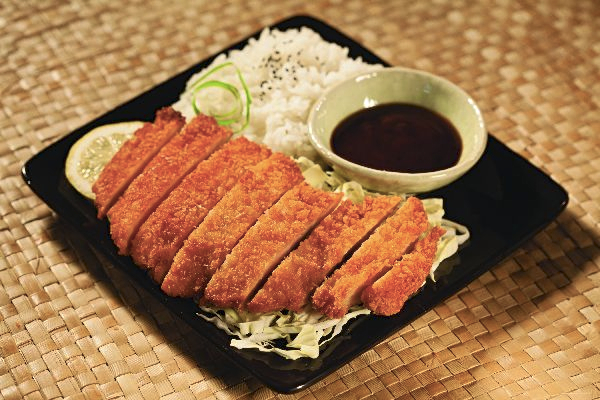

Chicken Katsu

Description
Chicken Katsu also known as panko chicken, or tori Katsu is a delicious Japanese dish.
It is made by frying chicken that has been coated with panko bread crumbs.
This gives it that crispy yet juicy taste.
Ingredients
- Chicken
- Panko Bread Crumbs
- Egg
- All Purpose Flour
- Oil
- Seasonings
Steps
- Season chicken breasts on both sides with salt and pepper.
Place flour, beaten egg, and panko crumbs into separate shallow dishes.
Coat chicken breasts in flour, shaking off any excess;
dip into egg, and then press into panko crumbs until well coated on both sides.
- Heat oil in a large skillet over medium-high heat.
Place chicken in the hot oil, and fry until golden brown, 3 or 4 minutes per side.
Transfer to a paper towel-lined plate to drain.